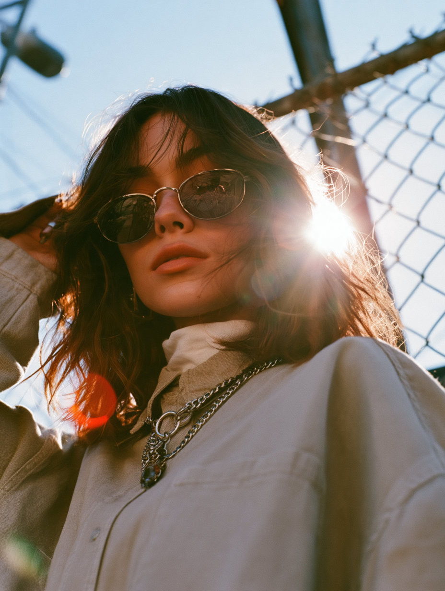
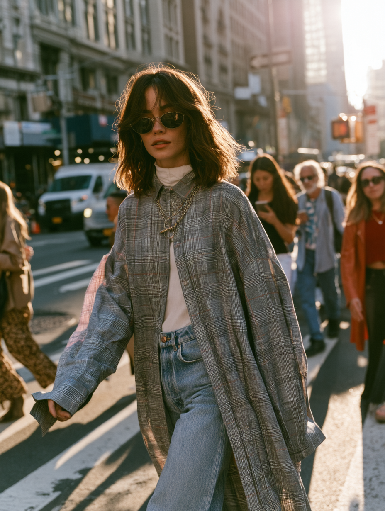
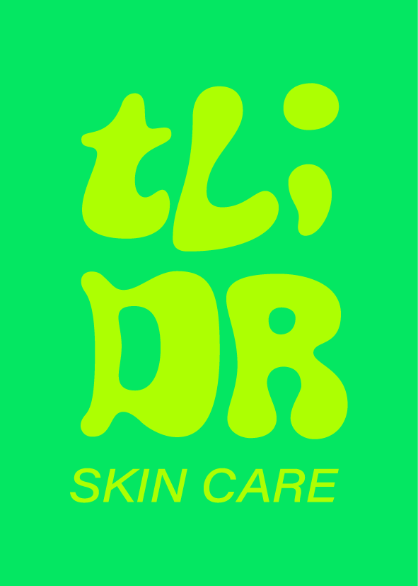
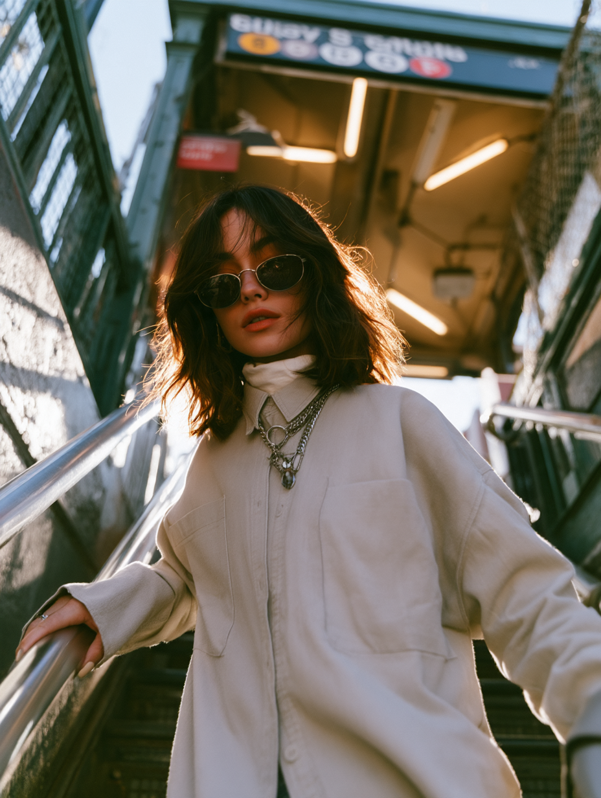
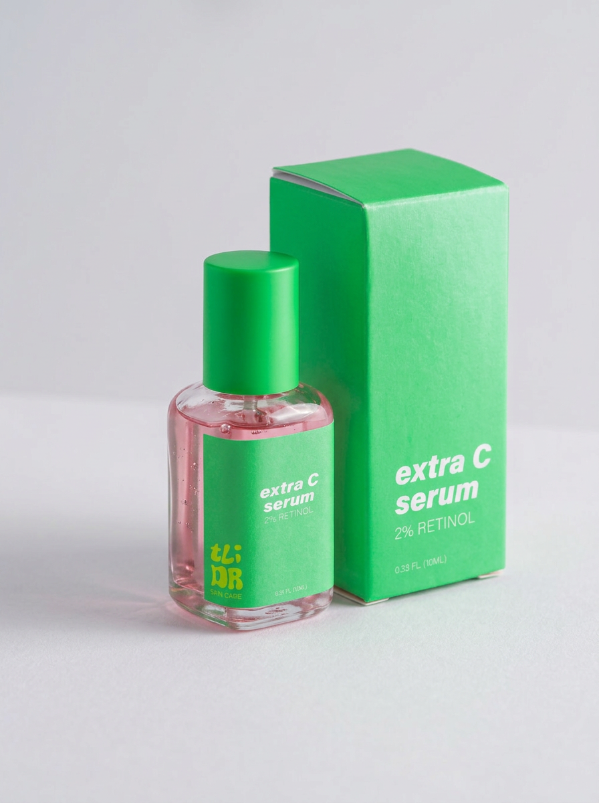
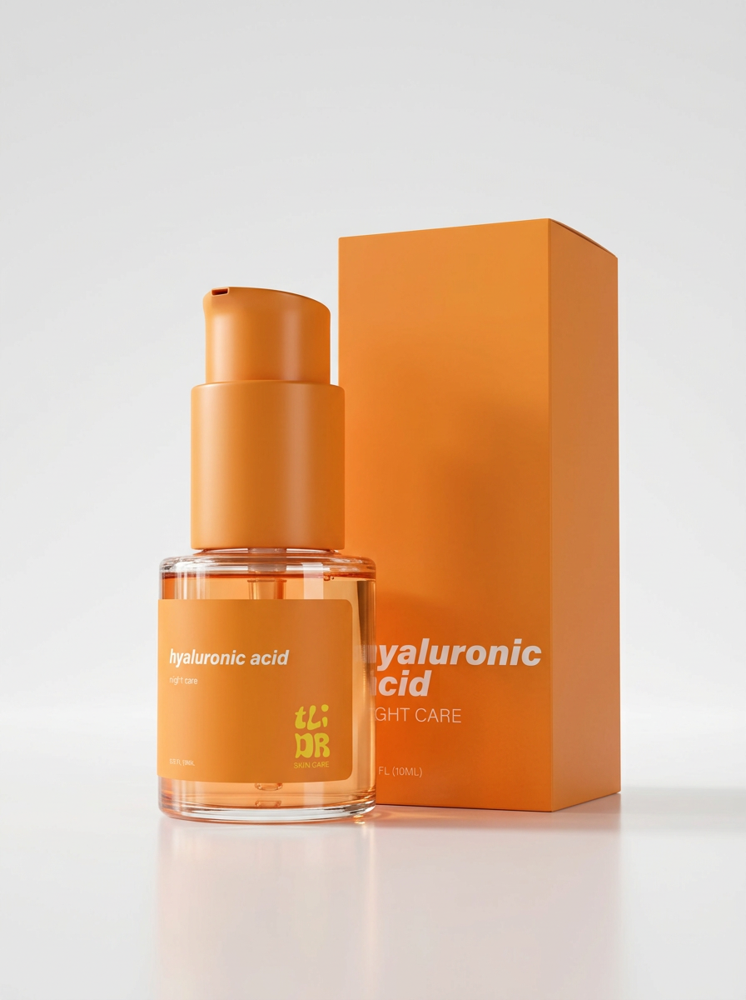
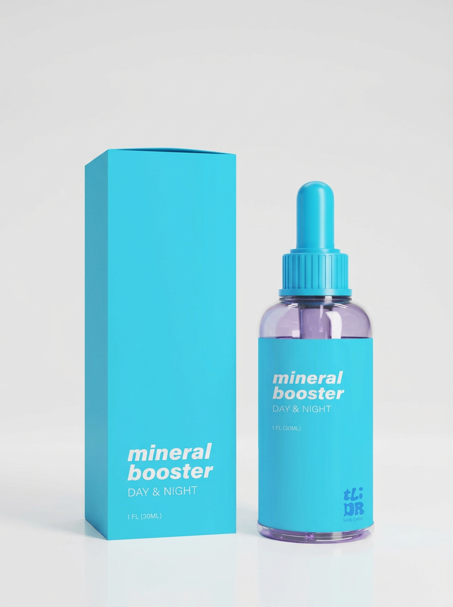
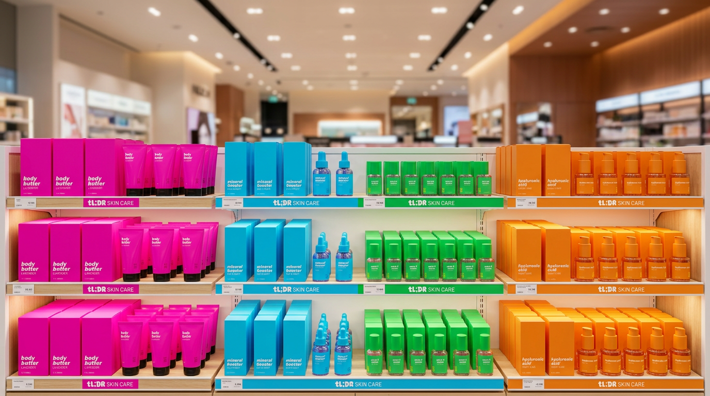

TL;DR skin care




branding//creative
TL;DR is a bold and playful cosmetics brand created for a generation that likes to keep things real, simple, and unapologetically expressive. Designed with Gen Z in mind, the brand breaks away from traditional beauty aesthetics through loud, vibrant colors, bold typography, and an energetic visual identity that demands attention. With a fresh, fearless attitude and a touch of humor, TL;DR turns everyday skincare into a fun, colorful experience that refuses to blend in.



TL;DR peaks the same language as its audience, bold, direct, and straight to the point.
A generation that doesn't have time for unnecessary details, just the bottom line: what the product does and what's inside.
The visual identity reflects this attitude through bright, unapologetic colors and clean, straightforward typography, creating a bold contrast with the complex, expressive logo that captures the personality of its audience.

No fluff, no overexplaining. Just the essentials, with attitude.